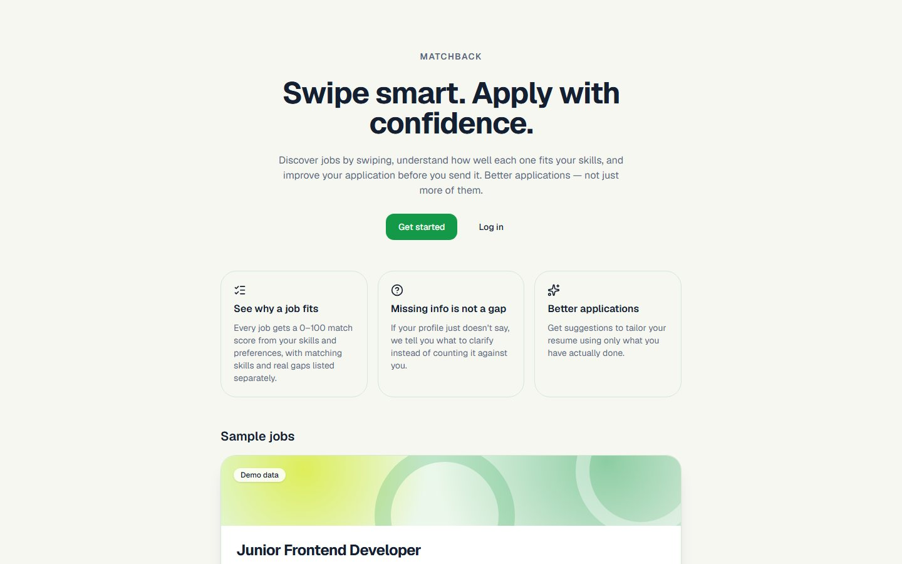

MATCHBACK
A two-sided "Tinder for jobs": candidates swipe on jobs, recruiters swipe on candidates, and it is a match only when both sides like each other.

Why I built it
We built MATCHBACK in two days for the U-Hackathon 2026 AI Track. Job hunting often means sending many applications and hearing nothing back, without knowing why. We wanted a job search where both sides have to show interest before anything happens, and where AI helps candidates understand their fit instead of judging them.
Who it is for
Job seekers who want to see why a job does or does not fit them and how to improve their application, and recruiters who review privacy-safe candidate cards for one role and only see names and contact details after a mutual match. Our team took part in the hackathon; we did not win a prize, but we shipped a working, deployed app before the deadline.
What it does
- A swipe deck of jobs for candidates, with mouse dragging, touch swiping, buttons and keyboard controls.
- A 0–100 fit score for every job, listing matched skills, real gaps and things the profile simply does not say yet.
- An AI explanation of the score and a Resume Coach that suggests changes based only on what the candidate has actually done.
- A recruiter side: a company profile, job management and a candidate deck for one job at a time.
- Mutual matches: a candidate's name and email are revealed only after both sides like each other.
- MATCHBACK Bot, a career assistant for candidates.
My part
- Set up the project and wrote the plan that split the work between four developers working in parallel.
- Built the two-sided database schema, the recruiter and company endpoints and the mutual-match API.
- Switched the AI service to Google Gemini and built MATCHBACK Bot, with a fallback when the AI is unavailable.
- Seeded the demo data and set up the deployment.
Challenges and decisions
Keeping the score honest
The fit score is calculated by fixed rules, so the same profile always gets the same score and every point can be explained. The AI only explains the score and gives advice; it never calculates or changes it.
When the AI is down
Every AI feature has a rule-based fallback, so explanations, the Resume Coach and the bot still answer if the Gemini API fails or runs out of quota during the demo.
Four people, two days
Each file had exactly one owner and the API contract was written down first, so four developers (and their AI coding agents) could build in parallel without overwriting each other's work.
What I learned
Building fast as a team means agreeing on the boundaries first. Writing down the API contract and giving every file one owner let four of us work in parallel without breaking each other's code. I also learned where AI belongs in a product: explaining and coaching are a good fit, but a score people rely on should come from clear rules that anyone can check.
Built with
- Frontend
- Next.js 16 (App Router), React 19, TypeScript, Tailwind CSS 4, shadcn/Base UI
- Backend
- NestJS 11, Prisma 7, REST
- Database
- PostgreSQL
- AI
- Google Gemini API behind the server, with rule-based fallbacks
- Hosting
- Vercel (web), Render (API)